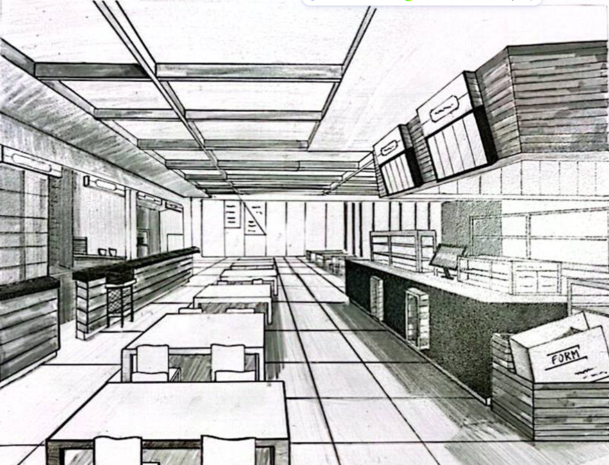
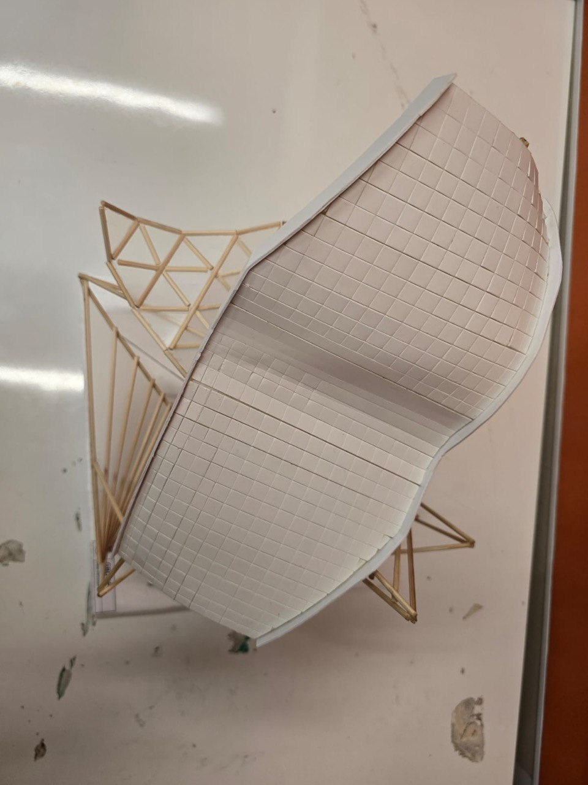
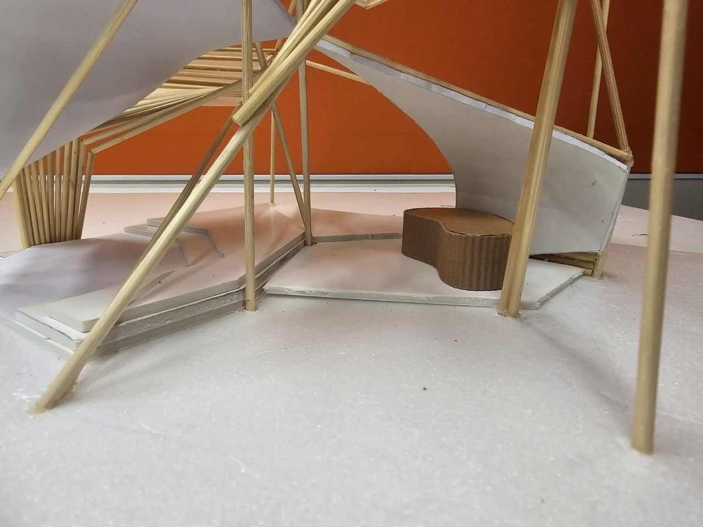

Portfolio
Leo Aung
Khant Thaw
Architecture Student / Designer
Biography
Passionate about exploring the fluid boundaries between functional tectonic form, landscape integration, and sustainable built environments. This curation displays academic iterations built on foundational contextual matrices, material performance studies, and programmatic spatial logic.
EDUCATION
EXPERIENCE
CAPABILITIES
- ▪ Conceptual Form Formulation
- ▪ Topographic Landscape Analysis
- ▪ Tectonic Massing Configuration
- ▪ Passive Climate Strategy Mapping
EXPERTISE / TOOLKIT
CONTENT
Sketches Collection



pavilion
SOME TEXT HERE. Analyzing structural boundary limitations, programmatic response modules, and light illumination angles.

Physical Model Iterations
Explanatory physical model studies detailing roof joint configurations, timber framing alignments, and surface materials. The wood strip mockups demonstrate stability under structural loads and explore spatial permeability through light and shadow articulation.


Shelter Project
design issue
Addressing urban friction lines, microclimate bottlenecks, and site elevation constraints.
design intent
Creating continuous, unhindered pathways that stitch landscape topography with newly formed public pavilions.




Revit solely
Dedicated architectural modeling utilising Autodesk Revit. Showcasing BIM component formulation, parametric family definitions, structural grid mapping, and automated construction documentation layouts.
future plates
Upcoming project documentation plates, including passive climate strategy mappings, envelope analysis, and site elevation constraints.